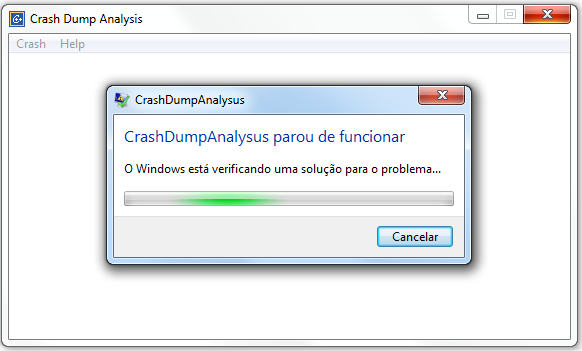

- 15 Anos e Meio
- O Último Dragão
- Primer (Shane Carruth, 2004)
- À Prova de Morte
- Spartacus (Stanley Kubrick, Anthony Mann, 1960)
- O Bem Amado
- Breakpoints promíscuos
- Sétimo Encontro de Programadores C++
- Twitter, eu?
- Salt
# 15 Anos e Meio
Caloni, 2010-07-07 <cinema> <movies> [up] [copy]Essa é daquelas comédias francesas que esperam arrancar risadas criando expectativas em cenas isoladas. Contudo, se sai razoavelmente bem ao juntar toda sua história através do pai, que precisa aprender a respeitar as liberdades que sua filha recém-adolescente "adquiriu" aos 15 anos de idade. Algumas ideias como o Einstein como conselheiro poderiam ser deixadas de fora, pois não são orgânicas nem engraçadas o suficiente para justificar suas aparições no decorrer da narrativa.
Por outro lado, a química pai-filha de Daniel Auteuil (Caché) e Juliette Lamboley funciona praticamente todas as vezes que os vemos juntos em cena. Auteuil, desnecessário dizer, se sai tão bem em um drama de Haneke quanto em uma comédia adolescente de François Desagnat e Thomas Sorriaux (que não fizeram mais nenhum longa desde então).
Enfim, um filme sessão da tarde que diverte moderadamente e faz o tempo passar. Mas nada mais que isso.
# O Último Dragão
Caloni, 2010-07-07 <cinema> <movies> [up] [copy]Uma história batida que é cozinhada em banho-maria, pois o filme parece bem mais longo do que poderia ser. Se trata da velha jornada de um aprendiz de kung-fu que aguarda se encontrar com o grande mestre que o levará até o último nível do seu aprendizado. Enquanto busca incessantemente esse mestre, tem que se livrar do mestre do mal e seus capangas que insistem em persegui-lo (aparentemente sem motivos) e sua família. De quebra, ainda vive um romance com quem mais? A DJ mais desejada pelos rapazes da época.
Aliás, um fato novo de toda essa lengalenga é que o protagonista é negro e toda a história gira em torno da atmosfera dos anos 70, com aqueles rádios enormes, cabelos "Black Power" e a gingada de Michael Jackson, tudo isso aliado aos ensinamentos de Bruce Lee. Aliás, foi bom falar sobre ele: as melhores cenas do filme são retiradas exatamente do real mestre do kung-fu, que deveria ficar bem envergonhado se estivesse vivo e visse onde estão usando imagens de suas lutas lendárias.
# Primer (Shane Carruth, 2004)
Caloni, 2010-07-09 <cinema> <movies> [up] [copy]Com uma fotografia impressionante se considerarmos que foi produzido com 7 mil dólares, o núcleo de Primer é o relacionamento entre dois cientistas após eles descobrirem ou inventarem uma maneira de viajar para o passado. O uso racional e ético da questão são os pontos fortes que fazem com que os diálogos não-técnicos entre Aaron (Shane Carruth) e Abe (David Sullivan) enriqueçam cada vez mais a história. Quando as coisas começam a dar errado, o resultado é tão confuso que espectadores de primeira viagem podem se sentir completamente perdidos da metade para o final. No entanto, o esforço para que imaginemos o que está acontecendo é compensatório, pois a sensação única de estar vendo um filme realista sobre viagem no tempo não tem preço.
# À Prova de Morte
Caloni, 2010-07-16 <cinema> <movies> [up] [copy]O lap dance memorável, a fusão elegante dos anos 70, o trash psicodélico, o moderno mundo das feministas, as cores resgatadas de uma época. O filme de Quentin Tarantino é um polimento de estilo a esses sub-gêneros, que merecem ser revistos como foram ambicionados: uma sessão matinê para crianças. A proposta original do diretor era ser um programa duplo no cinema com Planeta Terror, o filme de Robert Rodriguez que também seguia essa mesma premissa de parecer um filme B.
Uma mensagem final aos desavisados de plantão: sim, a conclusão da história é válida e catártica para o conflito das jovens damas e o seu algoz. Ninguém precisa amarrar tantas pontas assim, ainda mais sabendo que essa é uma curva muito mais temática que narrativa.
# Spartacus (Stanley Kubrick, Anthony Mann, 1960)
Caloni, 2010-07-20 <cinema> <movies> [up] [copy]O primeiro filme de Stanley Kubrick. Kirk Douglas, produtor executivo, substituiu o diretor original, Anthony Mann, após a primeira semana de filmagens. Nessa época Kubrick contava 30 anos de idade, e apesar de ter feito já 4 produções, nenhuma com uma grandiosidade como essa. E o mais impressionante em todo o filme é esse tom épico, com quadros que evocam claramente outro clássico, de Cecil B. DeMille: Os 10 Mandamentos. Vemos a multidão de escravos rebeldes crescendo, formando acampamentos, atravessando vales gigantescos apenas com a vontade de ser livre.
No meio de tudo isso a figura de Spartacus (Kirk Douglas), o nome-título, mais como um símbolo do que como uma pessoa que determina seu destino. Isso é mostrado na cena em que os prisioneiros após a batalha final são convidados a reconhecer Spartacus para se verem livres do castigo de serem crucificados, no que todos dizem "Eu sou Spartacus". No fundo, todos são o mesmo escravo responsável pela luta pela liberdade.
Spartacus, como é visto no filme e interpretado de forma brilhante, desde o início leve até o final cruel, por Kirk Douglas, personifica o homem comum que era o escravo. As cenas em que ele conversa com sua mulher e colegas são as mais significativas, mais contemplativas dessa situação em que ele vive. Seus sentimentos são postos para fora de uma forma tocante e ao mesmo tempo plausível vindo desse personagem que viveu escravo, mas possui o espírito livre.
E do outro lado, o senado romano e suas estruturas de guerra eterna são mostradas da maneira mais vívida e realista possível, bem melhor que qualquer livro de história que alguém possa ler sobre esse evento. E a figura de Charles Laughton como senador Gracchus é imprescindível para que tenhamos a exata noção do nível de politicagem que corria solta no senado. Ao mesmo tempo, Laurence Olivier encarna o imperador-general Crassus representando, assim como Júlio César e Caio, aquela parte da elite romana que não entendeu bem ainda o que aconteceu com o Império.
# O Bem Amado
Caloni, 2010-07-24 <cinema> <movies> <miniviews> [up] [copy]O bom das produções brasileiras baseadas na literatura é que geralmente não se perde a essência da história em adaptações e temos um arsenal de ótimos atores para representar mais um exemplo de brasilidade cultural, comportamental e social. Aqui é o velho clichê do político corrupto de uma cidadezinha, tantas vezes usadas em novelas, e que agora assume o formato de filme "globochanchada", mas diferente do que é produzido hoje, esse tem certas qualidades que faltam ao material "original" da rede televisiva: inteligência.
# Breakpoints promíscuos
Caloni, 2010-07-26 [up] [copy]Ontem falei sobre como "brincar" com os breakpoints promíscuos, ou seja, aqueles que topam qualquer processo. Isso é muito simples de se fazer:
- Configure uma VM para bootar em kernel debug.
- Encontre um processo qualquer (vamos usar o notepad pra variar?).
- Reabra os símbolos de user mode nele.
- Defina um breakpoint em alguma DLL de user mode.
Como meus leitores são muito espertos vou partir para o momento após rodarmos um notepad.exe:
kd> !process 0 0 notepad.exe
PROCESS 81681be0 SessionId: 0 Cid: 0598 Peb: 7ffd7000 ParentCid: 0200
DirBase: 08740260 ObjectTable: e18ee8d8 HandleCount: 29.
Image: notepad.exe
kd> .process /i 81681be0
You need to continue execution (press 'g' <enter>) for the context
to be switched. When the debugger breaks in again, you will be in
the new process context.
kd> g
Break instruction exception - code 80000003 (first chance)
nt!RtlpBreakWithStatusInstruction:
80527bdc cc int 3
kd> .reload /user
Loading User Symbols
.......................
kd> bp user32!MessageBoxExW
kd> g
Breakpoint 0 hit
USER32!MessageBoxExW:
001b:7e3a0838 8bff mov edi,edi
kd> du poi(esp+8)
0007cfb8 "naoexistetralala.txt.Arquivo não"
0007cff8 " encontrado..Verifique se o nome"
0007d038 " do arquivo correto foi especifi"
0007d078 "cado."
kd> ezu poi(esp+8) "Esse arquivo não existe! Mas é muito mané, não é mesmo?"
kd> g
O screenshot diz tudo:

Agora a parte mais divertida: experimente com outro notepad, ou com o explorer =)
# Sétimo Encontro de Programadores C++
Caloni, 2010-07-26 [up] [copy]Mais um fim-de-semana no ócio e na vadiagem. Tenho que manter minhas qualidades de bom programador que sou: preguiçoso, impaciente e pretensioso.
Mas nem por isso deixei de terminar uma primeira versão do aplicativo que irei usar como base na minha palestra do nosso próximo encontro C++: Crash Dump Analysis. Se alguém tiver dicas de quais os problemas mais difíceis do Universo para analisar em um dump de memória, comente a respeito e veremos o que dá pra fazer.
Enquanto isso, continuo descobrindo maravilhas do WinDbg. Essa semana fiquei brincando de colocar breakpoint em user-mode, mas depurando o kernel, como fizeram os rapazes do Ntdebugging. A conclusão é que ele vale para todos os aplicativos abertos. Tente com o MessageBox!
!process 0 0 notepad.exe .reload /user bp user32!MessageBoxW
Mas devaneio. Talvez outra boa qualidade de um bom programador.
# Twitter, eu?
Caloni, 2010-07-28 [up] [copy]Fico meio receoso de comentar aqui que, sim, eu tenho twitter, e, sim, sou praticante de mais uma das artes da vadiagem. Até porque se 5% dos meus tweets tiver alguma relação com o conteúdo desse blogue, é muito. O resto são comentários sobre economia&finanças, notícias aleatórias sobre alguma descoberta científica (ou não), dicas rápidas sobre cinema e sabe-lá-deus-o-que-mais.
E isso não vai mudar. É meu twitter pessoal. Aliás, meu próprio blogue também é pessoal, e é provável que no futuro ele que mude, e não o contrário.
Isso não quer dizer que vou deixar de ser programador. Acho que depois de dez anos programando sem parar essa opção não existe mais, pois as habilidades adquiridas já foram registradas no meu código genético. Só que, no meu caso, ser programador não evita que eu tenha uma porção de outros interesses e que me dedique a eles tanto quanto programação.
Dito isso, segue mais um ponteiro perdido pela rede.
# Salt
Caloni, 2010-07-30 <cinema> <movies> [up] [copy]Angelina Jolie protagoniza este thriller de ação que contém pelo menos uma sequência memorável na autoestrada, mas que em sua estrutura se esquece de contar uma história mais densa. A figura de Jolie sozinha como espiã é o suficiente para levar a história em seu andamento natural, mas a falta de algo a mais torna Salt, ironicamente, um filme sem sal.
[2010-06] [2010-08]